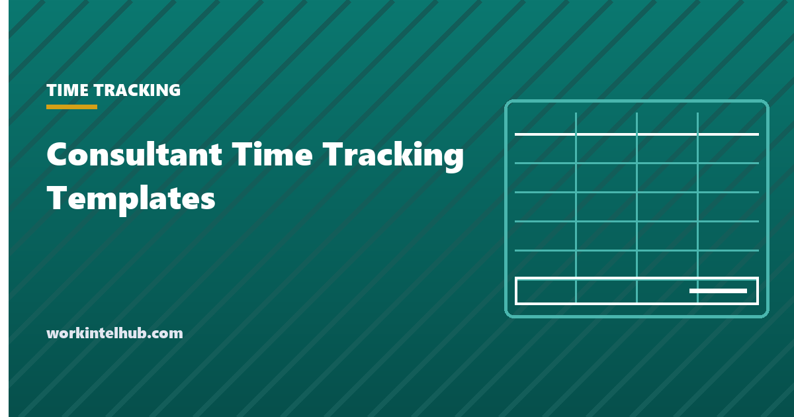

Consultant Time Tracking Templates

A consultant sells hours and judgement, and the hours are the only part a client can audit. A time log that records what was done, for whom, for how long and whether it is billable is the difference between an invoice that is paid on sight and one that starts a conversation. It is also the data that tells you which clients are profitable, which engagements ran over, and what your real hourly rate is after unbilled work.
The templates on this page are built for independent consultants and small firms: a daily log by client and task, a weekly timesheet, a retainer tracker that shows hours used against hours bought, and an invoice summary that rolls the log up by client. The Excel version calculates hours and amounts; the Word and PDF versions are for consultants who log on paper or in a client's office and transcribe later.
Download the templates
Free files: Word, Excel and PDF
Three files, free, no email required. Word to edit, Excel to track, PDF to print or share.
Templates open in Microsoft Word, Excel, Google Docs and Sheets, LibreOffice and any PDF reader. Free to use and adapt for your organisation.
What is in the templates
- Daily log. One row per block of work with start, end, client, project, task, billable flag and hours. The Excel version calculates hours from times and the amount from the rate, so the log is the invoice backup.
- Weekly timesheet by client. Hours per client per day, totalled and priced. Useful when a client wants a weekly view or when you need to see how the week split.
- Retainer tracker. Hours bought, hours used, hours remaining per client, so neither side is surprised at month end.
- Invoice summary. The log rolled up by client and period with fees, expenses and the total due, plus sent and paid dates so receivables are visible.
What to record and how
Record the task at the level a client would recognise: "drafted section 3 of the pricing proposal", not "work on proposal". Clients dispute vague entries and pay specific ones. Log in blocks as you go rather than reconstructing the day at 6 pm; reconstructed time is understated by 10 to 20 percent in most studies of professional time capture, and the understatement is your margin.
Mark non-billable time too: proposals, admin, learning, travel that the contract excludes. It does not go on the invoice, but it decides your real rate. A consultant billing $150 an hour for 25 billable hours in a 45-hour week is earning $83 an hour. The billable hours calculator turns the log into utilisation and effective rate.
Round at the invoice, not in the log. Log to the minute, then apply whatever increment the engagement letter states, typically six or fifteen minutes. Rounding each entry up compounds into hours a client can find.
Match the log to the contract
The engagement letter decides what the log must prove. Time and materials contracts need task-level entries and the rate; fixed-fee contracts need hours anyway, to know whether the fee was right; retainers need the running balance and a rule for unused hours (roll over, expire, or refund). Where a client caps hours or requires approval over a threshold, record the approval in the notes column so the invoice carries it.
Keep the log for the period the contract requires, and at least as long as the limitation period for a fee dispute, typically four to six years. Export the Excel file to PDF when you invoice, so the backup is frozen.
Mistakes that cost consultants money
- Logging at the end of the week. The week before invoicing is the most-forgotten.
- One line per day with no task detail, which invites a query.
- Not logging non-billable time, so utilisation is unknown and pricing stays wrong.
- Rounding every entry up instead of rounding the invoice total.
- Retainers tracked in your head, so the overage conversation happens after the hours are spent.
Key takeaways
- Log in blocks as you work, at task level a client would recognise, to the minute; round at the invoice.
- Record non-billable time: it decides your real hourly rate.
- Match the log to the contract type: tasks and rates for time and materials, balances for retainers, approvals where hours are capped.
- Freeze the log as a PDF when you invoice and keep it for the dispute period.
Frequently asked questions
What should a consultant time tracking template include?
Date, start and end times or duration, client, project, task described at a level the client would recognise, a billable flag, the rate and the amount. A weekly view by client, a retainer balance and an invoice summary turn the log into billing and profitability data.
Should consultants track non-billable hours?
Yes. Non-billable hours are not invoiced but they set your effective rate and tell you which engagements and clients are worth keeping. Most independent consultants bill 50 to 65 percent of their working hours; the rest is proposals, admin and learning.
What billing increment should I use?
Whatever the engagement letter says, commonly six or fifteen minutes. Log to the minute and round once at the invoice. Rounding each entry up is the practice clients most often challenge.
How do I track a retainer?
Record hours purchased for the period, log each block of work against the client, and show hours remaining after every entry. State in the contract what happens to unused hours and when extra hours need approval.
Is a spreadsheet enough or do I need time tracking software?
A spreadsheet is enough for one consultant with a handful of clients. Software earns its cost when you have several people, want timers, need invoices generated from the log or bill through a client portal; the time tracking software reviews on this site compare the options.